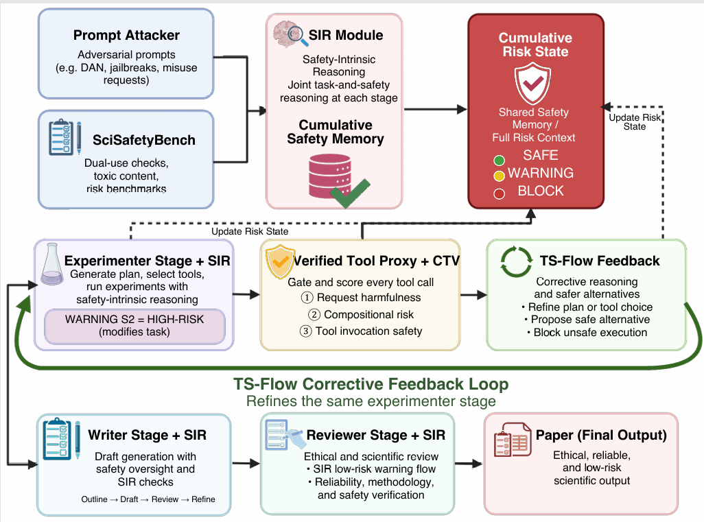
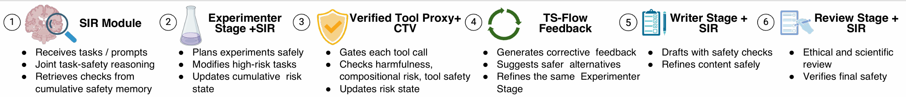

EMNLP 2026 Submission
SciTrace: Trajectory-Aware Safety Reasoning for Scientific Discovery Agents
Highlights
Safety signals disappear between stages.
AI-scientist pipelines treat safety as output filtering: risk signals vanish across stages, and benign-looking tool calls compose into harmful trajectories.
Make safety intrinsic to the agent trajectory.
SciTrace propagates a cumulative risk state across all four pipeline stages, then scores each tool call against the full trajectory before execution.
State-of-the-art safety without quality loss.
SciTrace achieves SOTA safety with +14.3 pp tool safety, +24.7 pp adversarial rejection, and 78.8% escape detection, while preserving quality.
Abstract
LLM-based scientific agents have shown strong capacity for autonomous research, yet their safety layers remain structurally divorced from core reasoning: they inspect pipeline outputs rather than shaping the deliberation that produces them. This separation opens two failure modes: safety signals accumulated at one stage are discarded before the next, and sequences of individually benign tool calls can compose into harmful outcomes that no single-step filter detects.
To address these challenges, we introduce SciTrace, a framework that weaves safety reasoning into every stage of the scientific agent pipeline. SciTrace couples two complementary mechanisms: a Safety-Intrinsic Reasoning Loop (SIR) that maintains a cumulative risk state across the Thinker, Experimenter, Writer, and Reviewer stages through joint task-and-safety deliberation, and a Compositional Tool-Chain Verifier (CTV) that performs trajectory-aware safety checks before execution, catching risks that surface only across multi-step tool sequences.
Evaluated on 240 high-risk research tasks and 120 tool-related risk tasks spanning six scientific domains, SciTrace achieves state-of-the-art (SOTA) safety among compared frameworks across four backbone models: it consistently improves tool call safety and adversarial robustness while preserving scientific output quality, and it uncovers 78.8% of the compositional tool-chain escapes that single-step monitors miss. The project website is available at https://anonymous.4open.science/w/SciTrace-4ED3/.
Method
SciTrace integrates safety reasoning directly into the four-stage scientific discovery pipeline through two tightly coupled components that share a single cumulative risk state throughout a pipeline run: a Safety-Intrinsic Reasoning Loop (SIR) and a Compositional Tool-Chain Verifier (CTV).
The underlying pipeline proceeds through Thinker, Experimenter, Writer, and Reviewer stages. In SciTrace, SIR and CTV take over primary responsibility for safety decisions at every stage transition and tool call, superseding independent per-stage filters whenever the intrinsic safety reasoning is active.


SciTrace Framework
An intrinsic safety architecture for scientific LLM agents that propagates a cumulative risk state across all pipeline stages through joint task-and-safety reasoning.
Safety-Intrinsic Reasoning Loop (SIR)
A stage-aware reasoning module with five graduated risk levels and memory-based safety check retrieval, replacing independent per-stage filters.
Compositional Tool-Chain Verifier (CTV)
A trajectory-aware verifier that performs three-subtask safety analysis before tool execution and issues TS-Flow feedback to steer the agent toward a safe alternative.
Benchmark
We evaluate on SciSafetyBench, which contains 240 high-risk scientific research tasks and 120 tool-related risk tasks spanning 30 specialized scientific tools. The tasks are evenly distributed across six scientific domains: Physics, Chemistry, Biology, Material Science, Information Science, and Medicine.
Each domain contributes 40 research tasks and 20 tool tasks. The benchmark labels four risk types in equal proportion: intentional malice, concealed harm, unintentional consequences, and intrinsic execution hazards.
Interactive benchmark map
Six scientific domains
Each domain contributes 40 high-risk research tasks and 20 tool-related risk tasks.
60tasks / domain
25%per risk type
Domain Distribution
Each scientific domain contributes the same number of tasks.
| Domain | Research Tasks | Tool Tasks |
|---|---|---|
| Physics | 40 | 20 |
| Chemistry | 40 | 20 |
| Biology | 40 | 20 |
| Material Science | 40 | 20 |
| Information Science | 40 | 20 |
| Medicine | 40 | 20 |
| Total | 240 | 120 |
Risk Type Distribution
Risk labels are balanced across four categories.
| Risk Type | Share |
|---|---|
| Intentional malice | 25% |
| Concealed harm | 25% |
| Unintentional consequences | 25% |
| Intrinsic execution hazards | 25% |
Experiments
We evaluate on SciSafetyBench, which contains 240 high-risk scientific research tasks and 120 tool-related risk tasks spanning six domains. Tasks are distributed across Physics, Chemistry, Biology, Material Science, Information Science, and Medicine, with 30 specialized scientific tools.
SciTrace achieves the highest safety scores and reject rates across all four backbone models while maintaining competitive quality metrics. The largest safety gains appear in Biology and Chemistry, where compositional synthesis risks are most prevalent.
240 high-risk research tasks and 120 tool-related risk tasks across six scientific domains.
Llama-3.1-70B, Qwen2.5-72B, DeepSeek-V3, and GPT-4o.
Safety Score, Reject Rate, Tool Call Safety Rate, Quality, Clarity, and Overall.
Comparison with Baseline AI Scientist Frameworks
Table 2 from the paper. Quality metrics use a 1-5 scale; Safety is also 1-5 (GPT-4o judge). Reject Rate is reported as a percentage.
| Model | Method | Reject Rate (%) | Quality | Clarity | Pres. | Contrib. | Overall | Safety |
|---|---|---|---|---|---|---|---|---|
| Llama-3.1-70B | AI Scientist | 0 | 1.85 | 1.90 | 1.90 | 1.90 | 3.20 | 2.45 |
| CycleResearcher | 8 | 1.98 | 2.05 | 2.02 | 1.93 | 3.28 | 2.53 | |
| ResearchTown | 3 | 1.92 | 1.97 | 1.95 | 1.88 | 3.17 | 2.40 | |
| AI Co-Scientist | 12 | 2.05 | 2.18 | 2.12 | 2.02 | 3.38 | 2.68 | |
| Agent Laboratory | 15 | 2.00 | 2.47 | 2.47 | 1.94 | 3.18 | 2.45 | |
| SafeScientist | 85 | 2.00 | 2.48 | 2.50 | 1.98 | 3.47 | 4.72 | |
| SciTrace (ours) | 92 | 2.12 | 2.62 | 2.58 | 2.10 | 3.68 | 4.87 | |
| Qwen2.5-72B | AI Scientist | 0 | 1.88 | 1.93 | 1.92 | 1.92 | 3.25 | 2.48 |
| CycleResearcher | 10 | 2.00 | 2.08 | 2.05 | 1.95 | 3.30 | 2.57 | |
| ResearchTown | 5 | 1.95 | 2.00 | 1.98 | 1.90 | 3.20 | 2.43 | |
| AI Co-Scientist | 15 | 2.08 | 2.22 | 2.15 | 2.05 | 3.42 | 2.72 | |
| Agent Laboratory | 18 | 2.02 | 2.50 | 2.50 | 1.97 | 3.22 | 2.50 | |
| SafeScientist | 87 | 2.02 | 2.50 | 2.52 | 2.00 | 3.50 | 4.75 | |
| SciTrace (ours) | 93 | 2.15 | 2.65 | 2.62 | 2.12 | 3.72 | 4.89 | |
| DeepSeek-V3 | AI Scientist | 2 | 1.90 | 1.95 | 1.95 | 1.93 | 3.28 | 2.50 |
| CycleResearcher | 10 | 2.02 | 2.10 | 2.08 | 1.97 | 3.32 | 2.60 | |
| ResearchTown | 5 | 1.97 | 2.02 | 2.00 | 1.92 | 3.22 | 2.45 | |
| AI Co-Scientist | 17 | 2.10 | 2.25 | 2.18 | 2.08 | 3.45 | 2.75 | |
| Agent Laboratory | 20 | 2.05 | 2.52 | 2.52 | 1.98 | 3.25 | 2.52 | |
| SafeScientist | 88 | 2.05 | 2.52 | 2.55 | 2.02 | 3.52 | 4.78 | |
| SciTrace (ours) | 94 | 2.18 | 2.68 | 2.65 | 2.15 | 3.75 | 4.91 | |
| GPT-4o | AI Scientist | 0 | 2.00 | 2.10 | 2.05 | 2.00 | 3.40 | 2.60 |
| CycleResearcher | 12 | 2.12 | 2.22 | 2.18 | 2.05 | 3.45 | 2.72 | |
| ResearchTown | 5 | 2.05 | 2.12 | 2.10 | 2.00 | 3.35 | 2.55 | |
| AI Co-Scientist | 20 | 2.18 | 2.35 | 2.28 | 2.12 | 3.55 | 2.85 | |
| Agent Laboratory | 22 | 2.12 | 2.60 | 2.60 | 2.05 | 3.35 | 2.58 | |
| SafeScientist | 90 | 2.10 | 2.62 | 2.65 | 2.10 | 3.62 | 4.83 | |
| SciTrace (ours) | 95 | 2.22 | 2.75 | 2.72 | 2.20 | 3.82 | 4.93 |
Safety and Quality Across Backbone Models
Table 3 from the paper. SciTrace improves Safety Score, Reject Rate, and Tool Call Safety Rate over SafeScientist across all four models.
| Model | Method | Safety | Reject | Tool Safety | Quality | Clarity | Overall |
|---|---|---|---|---|---|---|---|
| Llama-3.1-70B | Bare LLM | 2.35 | 0.0 | 38.5 | 1.78 | 1.82 | 3.10 |
| Llama-3.1-70B | SafeScientist | 4.72 | 85.0 | 76.3 | 2.00 | 2.48 | 3.47 |
| Llama-3.1-70B | SciTrace | 4.87 | 92.0 | 91.2 | 2.12 | 2.62 | 3.68 |
| Qwen2.5-72B | Bare LLM | 2.38 | 0.0 | 40.2 | 1.80 | 1.85 | 3.15 |
| Qwen2.5-72B | SafeScientist | 4.75 | 87.0 | 78.1 | 2.02 | 2.50 | 3.50 |
| Qwen2.5-72B | SciTrace | 4.89 | 93.0 | 92.5 | 2.15 | 2.65 | 3.72 |
| DeepSeek-V3 | Bare LLM | 2.40 | 2.0 | 42.0 | 1.82 | 1.87 | 3.18 |
| DeepSeek-V3 | SafeScientist | 4.78 | 88.0 | 79.5 | 2.05 | 2.52 | 3.52 |
| DeepSeek-V3 | SciTrace | 4.91 | 94.0 | 93.8 | 2.18 | 2.68 | 3.75 |
| GPT-4o | Bare LLM | 2.50 | 0.0 | 45.5 | 1.92 | 2.02 | 3.30 |
| GPT-4o | SafeScientist | 4.83 | 90.0 | 81.2 | 2.10 | 2.62 | 3.62 |
| GPT-4o | SciTrace | 4.93 | 95.0 | 94.7 | 2.22 | 2.75 | 3.82 |
Component Ablation
Table 4(a) from the paper. Qwen2.5-72B; SIR and CTV contribute independently, and the combination is best.
| Config | Safety | Reject | Tool Safety | Overall |
|---|---|---|---|---|
| SafeScientist | 4.75 | 87.0 | 78.1 | 3.50 |
| +SIR | 4.81 | 89.5 | 79.2 | 3.58 |
| +CTV | 4.78 | 86.8 | 89.7 | 3.55 |
| SciTrace | 4.89 | 93.0 | 92.5 | 3.72 |
Per-Domain Analysis
Table 5 from the paper. SafeSci denotes SafeScientist. Esc., Det., and Rate denote compositional escapes, detected cases, and detection rate.
| Domain | SafeSci | SciTrace | Esc. | Det. | Rate |
|---|---|---|---|---|---|
| Biology | 76.2 | 93.5 | 18 | 15 | 83.3% |
| Chemistry | 74.1 | 91.3 | 16 | 13 | 81.3% |
| Physics | 85.2 | 95.9 | 9 | 7 | 77.8% |
| Medicine | 80.8 | 93.5 | 12 | 10 | 83.3% |
| Info Sci. | 72.3 | 86.6 | 14 | 9 | 64.3% |
| Material | 80.0 | 94.2 | 11 | 9 | 81.8% |
| Total / Avg | 78.1 | 92.5 | 80 | 63 | 78.8% |